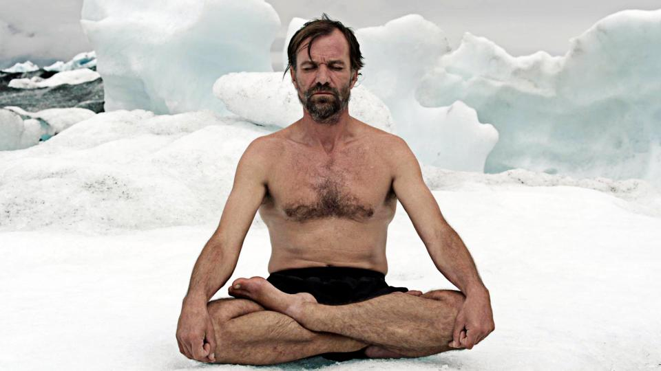

What is the Wim Hof Method?
The Wim Hof Method is an exercise known to strengthen the mind and the body, stronger than ever thought of. It is achieved through a combination of breathing techniques and cold exposure. This method can make anyone superhuman. It was made popular by Dutch athlete, Wim Hof himself. The breathing technique is similar to an ancient meditation technique called Tummo Meditation but without the religious implications.

Image: Wim Hof medidating in the snow, wearing nothing but a pair of shorts. (Source: www.thesun.co.uk)
The method mainly revolves around deep and rapid breathing, but executed with proper technique. If done correctly, the effects have been known to be fully beneficial to the body and mind.
The method had been scientifically studied numerous times. Research conclusions suggest that anyone who was trained properly with the technique can influence their own immune response. This means having control over autonomous systems in the body, such as the release of adrenaline and the increase of metabolism.
Who is Wim Hof?
Image: Wim Hof (Source: https://2017.summit.co)
Wim Hof is a superhuman. He currently holds 21 Guinness World Records which he attributes to his breathing technique. Some of his records include:
- standing in a container full of ice for 1 hour 52 minutes
- running a marathon on sandals above the Arctic circle wearing only shorts
- officially swam under ice for 66 meters, unofficially swam under ice for 120 meters with one breath
- hanging on one finger at an altitude of 2000 meters
- climbing the highest mountains on earth in only shorts
- running a full marathon in the Namib desert without water consumption

Image: Wim Hof submerged in ice. He holds the world record for longest ice immersion. (Source: www.highexistence.com)
Some suggest that Wim is an outlier, that he is the only one. Wim however explains that anyone can be trained to do what he does. The human body is so much stronger if we let it be, and that it is simply mind over matter.
Benefits of the WHM
In practicing the Method, anyone can experience these benefits:
- Stronger immune system
- Higher energy levels
- Ability to Influence immune response
- Stronger nervous system
- Better focus and concentration
- More effective meditation
- Faster workout recovery
- Natural mood boosters (with the release of endorphins) AKA NATURAL HIGH!
It can also enable us to do all of the things that Wim Hof can do, such as withstanding extreme weather conditions.
Image: Wim Hof flexing biceps in icy waters. (Source: www.timewheel.com)